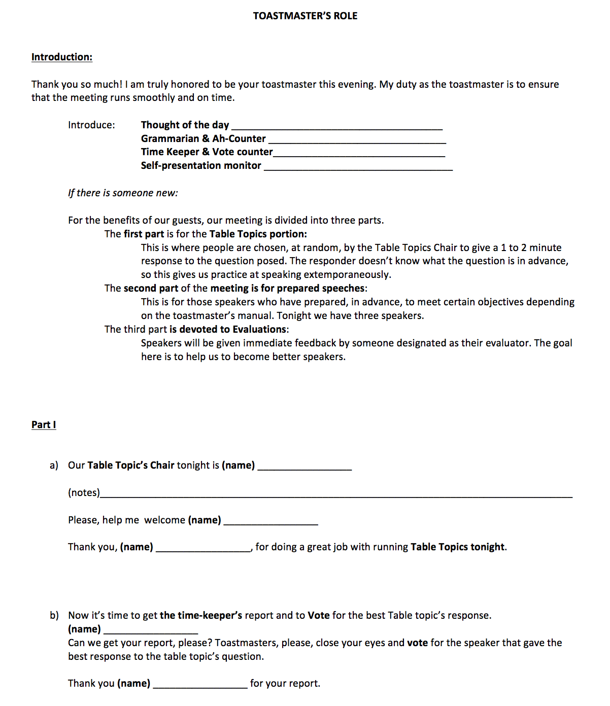

<!-- Main -->
	<div id="main" class="wrapper style1">
		<div class="container">
			<section>
				<p align="center"></p>
				<div class="10u -1u">
					<header class="major">
						
					</header>
					<h2>Summary of the Role</h2>
					<ul>
						<li>The Toastmaster is a meeting's director and host.</li><br>
						<i><font color="green"><b>Before the meeting:</b></font></i><br>
						<li>Prepare a short introduction based on speaker's interesting facts in the Jobs tab</li><br>

						<i><font color="green"><b>At the meeting:</b></font></i><br>
						<li>1. Arrive early.</li>
						<li>2. Wait for the president to introduce you.</li>
						<li>3. Start the meeting.</li>
						<li>4. Remind people to clap and shake hands and explain why this is important.</li>
						<li>5. Introduce the person giving thought of the day, time-keeper, grammarian and ah/um counter, self-presentation monitor and table topics chair.</li>
						<li>6. Follow the items on the agenda.</li>
						<li>7. After the table topics section and prepared speeches section, invite the Time Keeper to give their report and count the votes.</li>
						<li>8. Announce the winners of the votes and give the awards.</li><br>
					<li>If you have any questions, feel free to contact the <a href="mailto:annlee2018@u.northwestern.edu">VP Education</a>.</li>


</ul><br>
<h2>Toastmaster Script</h2>
Download: <a href="toastmasters.pdf"></a>
	
	<br>


<h2>More Resources:</h2>

<li><a href="toastmasters.pdf">A shorter script for Toastmasters</a></li>
<li><a href="https://www.toastmasters.org/Membership/Club-Meeting-Roles/Toastmaster">Resource from Toastmasters International</a></li>


				</div>
			</section>
		</div>
	</div>
